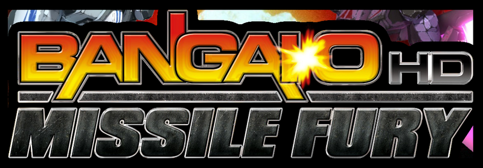

bangaio-nx installer
Builds the Nintendo Switch package of Bangai-O HD: Missile Fury (Xbox Live Arcade) from your own copy. Everything runs in this browser: nothing is uploaded.
1. Choose your game
Your Xbox 360 package of the game: title 58410AF2, the file in
Content/0000000000000000/58410AF2/000D0000/ of a console's storage. Or the folder the game was
extracted to (default.xex, media/, ...). The game has no title update.
Nothing chosen yet.
2. Create the package
The page makes the game's shaders from your files and compiles them for the Switch, which takes a few minutes and a few GB of memory. The zip then downloads while it is written (about 300 MB).
3. Copy it to the Switch
- Extract
bangaio-nx.zipto the root of the SD card: it makesswitch/bangaio-nx/. - Start
bangaio-nx.nrofrom the Homebrew Menu with a title takeover (hold R while starting a game). - Its settings are in
switch/bangaio-nx/renut.toml:docked_resolution(900 or 1080),smaa(true or false) andlanguage("english", "japanese" or "french"). Making the package again gives a freshrenut.toml: keep yours if you changed it.